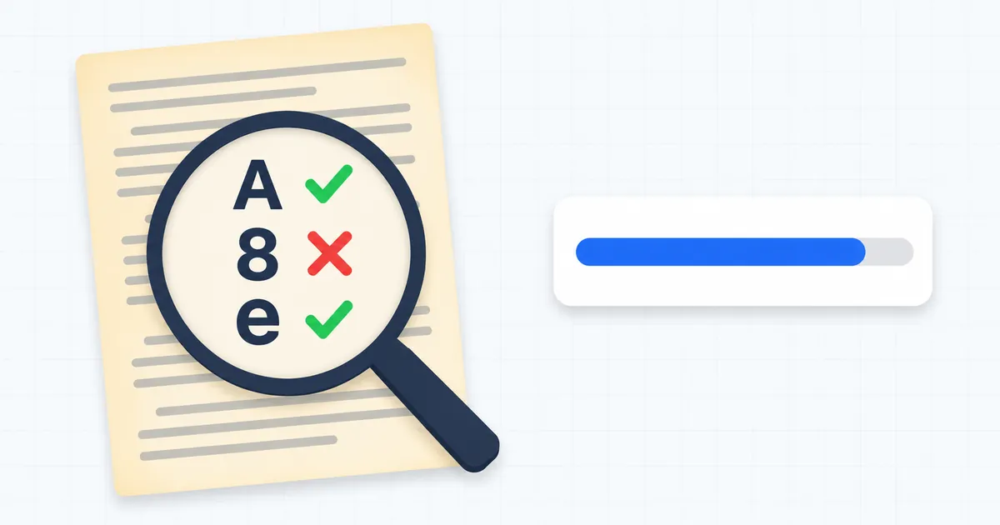
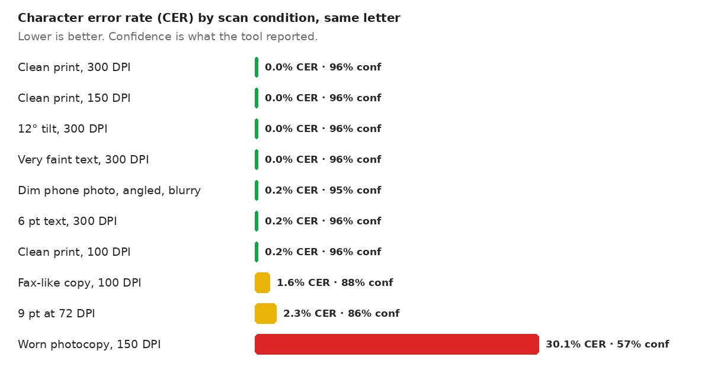
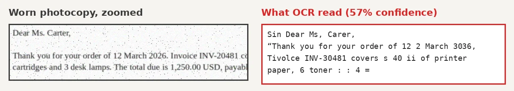
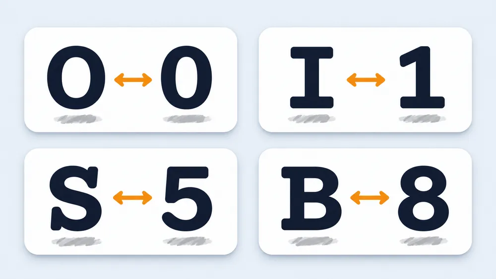
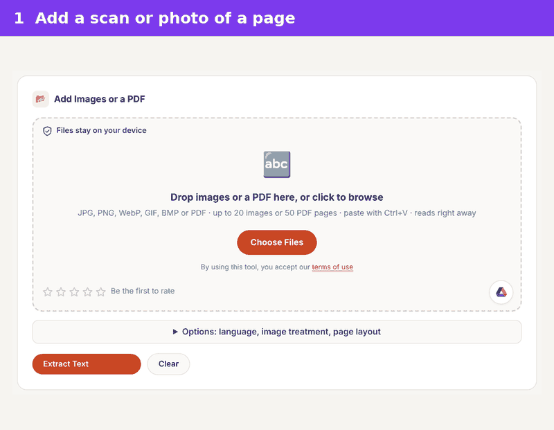

How Accurate Is OCR on Scanned Documents? We Tested It
OCR is very accurate at recognizing text from clean scanned documents: in our test, printed letters came back with almost no errors. Accuracy drops sharply on worn copies, noisy faxes and handwriting. The real risk is a confident-looking result with a few wrong numbers, so always check figures against the original.
Try it on your own scan with the free OCR image to text tool. It runs in your browser.

How accurate is OCR in recognizing text from scanned documents?
OCR reads clean printed scans almost perfectly, but every source puts a big gap between clean pages and real-world paperwork. The University of Illinois Library notes that vendors may advertise 97% to 99% accuracy. It adds that those figures count character errors, not word errors.
Published ranges vary widely. LlamaIndex puts the character error rate for printed text under 1% and for handwriting at 3–5%. Lido gives 85–97% character accuracy for traditional OCR and 98–99.5% for AI-based tools. None of these brands publish the test files behind those ranges.
That is why we ran our own test with a known letter and measured every error. The results match the general picture, with one twist explained below: damage to the paper mattered far more than resolution.
How is OCR accuracy measured?
OCR accuracy is measured by comparing the OCR output with a correct copy of the text, called the ground truth. The most common score is the character error rate, or CER: the share of letters that were wrong, missing or extra.
The word error rate, or WER, counts whole words instead. One wrong letter spoils a whole word, so WER always looks worse than CER. A page with 1% CER can easily have 5% WER.
| Measure | What it counts | Best for |
|---|---|---|
| Character error rate (CER) | Wrong, missing or extra letters | Comparing OCR engines |
| Word error rate (WER) | Wrong, missing or extra words | Search and reading |
| Field-level accuracy | Whole values, such as a total or a date | Invoices, forms and records |
Field-level accuracy matters most for business documents. Rely Services makes this point with an amount like 1,250.00 read as 1,250.80. The character score is high, yet the one value you needed is wrong.
Scores can also hide meaning. The Urban Institute warns that a similarity score treats "quality" misread as "duality" like any other one-letter slip. A tiny error count can still change what a sentence says.
What did our OCR accuracy test show?
Our test showed near-perfect OCR on clean, tilted, faint and low-resolution pages, and a heavy failure on a worn photocopy. We used one business letter of 97 words and 558 characters, then varied only the condition of the page.

| Page condition | CER | WER | Confidence shown |
|---|---|---|---|
| Clean print, 300 DPI | 0.0% | 0.0% | 96% |
| Clean print, 150 DPI | 0.0% | 0.0% | 96% |
| Clean print, 100 DPI | 0.2% | 1.0% | 96% |
| 12° tilt, 300 DPI | 0.0% | 0.0% | 96% |
| Very faint gray text, 300 DPI | 0.0% | 0.0% | 96% |
| Dim, angled, blurry phone photo | 0.2% | 1.0% | 95% |
| 6 pt text, 300 DPI | 0.2% | 1.0% | 96% |
| Fax-like copy, 100 DPI | 1.6% | 8.2% | 88% |
| 9 pt text at 72 DPI | 2.3% | 10.3% | 86% |
| Worn photocopy, 150 DPI | 30.1% | 60.8% | 57% |
Two results needed tool changes first. Before we added automatic straightening, the 12° page returned no text at all. The dim phone photo also failed until the tool learned to even out the shadow and try again.
Keep the limits in mind. Our pages were generated in a clean serif font, so real scans of old paper will usually score worse. Treat the numbers as a fair comparison between conditions, not a promise for every document.
The pattern is still useful. Clean pages in any of the tested resolutions were safe. Problems began only when the letters themselves were damaged, by fax-style hard edges, tiny screen-size text or photocopy specks.
Why does damage hurt more than low resolution?
Damage hurts OCR more than low resolution because specks and blur change the shapes of letters, while a small clean letter keeps its shape. In our test, the 100 DPI page lost one character, but the speckled 150 DPI photocopy lost almost a third.
That challenges a common rule of thumb. Lido says character accuracy falls under 90% below 150 DPI. Our clean 100 DPI page stayed above 99%. The resolution advice still holds for scanning, but dirt, toner specks and copy-of-a-copy blur do far more harm.

Look closely at the numbers in that output. The year 2026 became 3036, and invoice INV-20481 became INV-30481. Both still look like valid values, which is exactly what makes them dangerous in a spreadsheet or an accounts system.

Can you trust the OCR confidence score?
The OCR confidence score is a useful warning light, but it is not the same as accuracy. Rely Services draws the same line: confidence is the engine's own guess, while accuracy is checked against the real text.
In our test, the two moved together. Every page at 95% or higher had at most one wrong character. Scores of 86–88% came with 1.6–2.3% CER, and 57% came with 30% CER. Treat anything under about 90% as a page to proofread line by line.
While testing, we found our tool showed 95% for a page where it read nothing. Tesseract reports that value for empty pages, and the tool passed it on. It now shows a dash when no text is found.
Which documents does OCR still struggle with?
OCR still struggles with handwriting, damaged copies, complex tables and very old typefaces. The Illinois library guide says handwritten documents cannot be recognized with any useful degree of accuracy by standard OCR.
The Urban Institute tested four OCR services on poor scans, and all four struggled with the handwritten page. LlamaIndex gives a 3–5% character error rate for handwriting with newer tools, so results depend heavily on the engine.
Old print is another weak spot. The Illinois guide notes that texts published before 1850 may be less compatible with OCR software. Very small type, such as 6 pt, also lowers accuracy, though our clean 6 pt page lost only one character.
Tables and multi-column pages fail in a different way. The letters may be right, but the reading order breaks, so cells merge or columns interleave. Check structure as well as spelling.
How do you get the most accurate OCR from a scan?
You get the most accurate OCR by giving the engine a clean, flat, well-lit page in the right language. These steps follow the Illinois guide and our own results.
- Scan at 300 DPI, the resolution the Illinois library recommends.
- Keep brightness near 50%, since too high or too low reduces accuracy.
- Scan discolored or old pages in RGB color to keep all the image detail.
- Scan the original, not a copy of a copy, whenever you can.
- Pick the document's language before you run OCR.
- Check every number, date and name against the original.
Phone photos work well when the page is flat and evenly lit. Our guide to scanning documents with your phone covers framing and light, and our explainer on how OCR works covers what happens inside the engine.

For scanned PDFs, you can keep the page look and add a hidden text layer instead. The searchable PDF converter does that, so you can search and copy from the original scan.
Does the language setting change OCR accuracy?
The language setting changes OCR accuracy because the engine uses it to pick letter shapes and likely words. Rely Services lists an incorrect language or configuration among its seven main causes of poor OCR.
A wrong setting shows up as strange letters in otherwise clean text. Accented letters can lose their marks, text in another script may not be read at all, and common words come back slightly off. Set the language before you start, and choose two languages when a page mixes them.
Page layout settings matter in a similar way. A two-column article read as one block can mix lines from both columns. Pick the layout that matches the page, then check the reading order.
How can you test OCR accuracy on your own documents?
You can test OCR accuracy on your own documents by typing a correct copy of one typical page and comparing it with the OCR output. This is the same method we used, and it takes about as long as typing the page once.
- Pick one page that represents your usual paperwork, not your cleanest one.
- Type the text exactly, or copy it from the original digital file if you have it.
- Run OCR on the scan and paste both versions side by side.
- Count wrong numbers, names and dates first, then other errors.
Free text comparison tools can count the differences for you. If key values come back wrong on your test page, fix the scanning step before you process the rest of the batch.
How do OCR services compare?
OCR services differ most on poor scans, not clean ones. The Urban Institute compared AWS Textract, ExtractTable, Tesseract and Adobe Acrobat DC on three poor-quality scans, scoring each output against human-typed text.
Textract and ExtractTable came out ahead, with Tesseract close behind and Adobe performing poorly in that test. The authors note Tesseract ran without any image preprocessing, which could have improved it. They also tested only three documents, so treat the ranking as a hint rather than a verdict.
Price and privacy matter as much as scores. The same study lists Textract at $1.50 per 1,000 pages for plain text. It lists Acrobat DC at $14.99 a month on an annual plan, while Tesseract is free. Cloud services read your file on their servers, while browser tools built on Tesseract keep the image on your device.
Frequently Asked Questions
How accurate is OCR on a clean scanned document?
OCR is close to perfect on a clean, printed scan. In our test, clean pages from 150 to 300 DPI had no character errors. Real paperwork with stains or old type will score lower.
What is a good OCR accuracy rate?
A good OCR result has a character error rate under 1% for printed text. LlamaIndex gives that figure for printed documents. For invoices and forms, judge by whether every key value is right, not by the average.
Is 99% OCR accuracy good enough?
99% character accuracy is good for search but not for records. On a 558-character letter, 1% is about six wrong letters, and one of them could sit inside a total or a date.
Why does OCR mix up numbers like 0 and O?
OCR mixes up look-alike characters because their shapes are nearly the same. Rely Services lists O and 0, I and 1, S and 5, and B and 8 as common confusions. Checking numbers by hand is the only reliable fix.
Can OCR read handwriting?
Standard OCR reads handwriting poorly. The Illinois library guide says handwriting cannot be recognized with any useful accuracy, and all four services in the Urban Institute test struggled with it. Type the text, or use a tool built for handwriting.
Does a higher DPI always improve OCR?
No, higher DPI helps only up to a point. Our clean pages scored the same at 150 and 300 DPI. Damage such as specks and blur hurt far more, so a clean original beats a high-resolution copy.
Is AI OCR more accurate than traditional OCR?
AI-based OCR is usually described as more accurate on messy documents. Lido, for example, gives 98–99.5% character accuracy for AI-based tools against 85–97% for traditional OCR. On clean printed pages, our Tesseract-based test already reached near-zero errors.
Should I proofread OCR text?
Yes, proofread any OCR text you will rely on. The Illinois guide notes that OCR cannot check its own output. Start with numbers, names and dates, then read pages with low confidence in full.